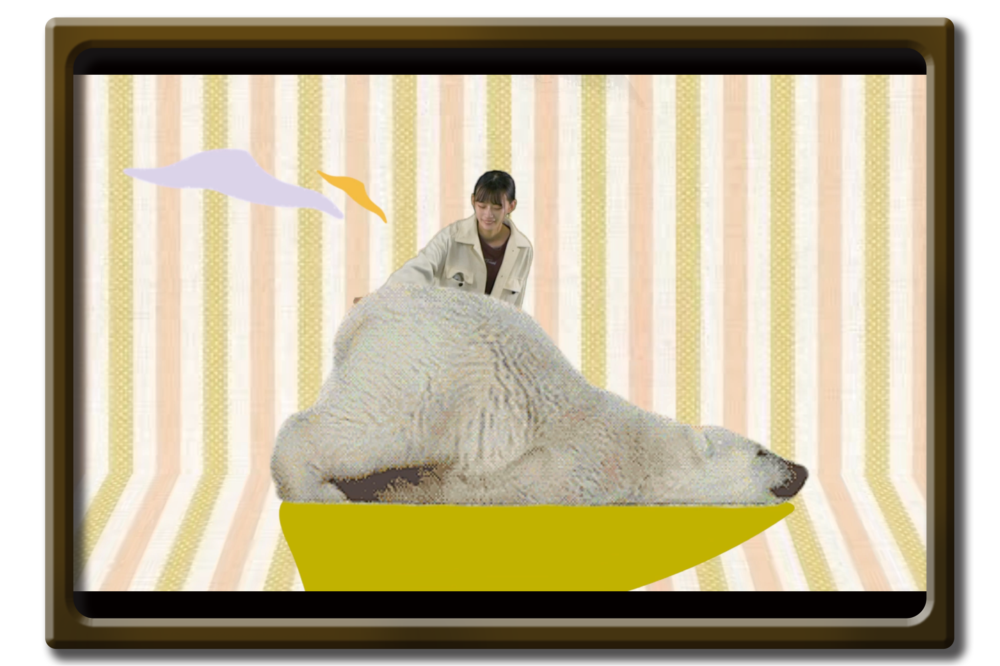

のんびりしろくま
2020/10/8-2020/10/22
GIF Animation
スタジオのグリーンバックを使用した撮影を行って製作したGIF動画です。
AfterEffect PremierePro

スタジオのグリーンバックを使用した撮影を行いGIF動画を製作しました。 ループ再生で違和感のないよう腕の位置やしろくまの足の動き、背景を調整し 動画の前後が繋がる編集にこだわりました。
‹ prev

next ›